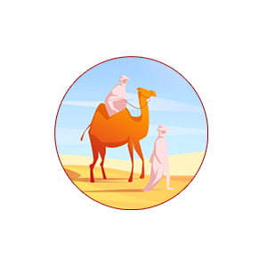

Kisah Umat Terdahulu
Menu

Orang-Orang Yang Lurus Sebelum Nabi Muhammad Diutus
Akhlak Masyarakat Jahiliyah: Menghormati Tetangga
Cara Masyarakat Jahiliyah Menokohkan Seseorang
Kisah Si Kaya dan Si Miskin (Pemilik Dua Kebun: Surat Al-Kahfi 32-44)
Peristiwa-Peristiwa Yang Terjadi di Masyarakat Arab Sebelum Islam
Budaya Arab: Akhlak Masyarakat Arab Sebelum Islam
Budaya Arab: Agama Bangsa Arab Sebelum Islam
Pelajaran dari Kisah Nabi Luth: Ketika Kaum Gay Mayoritas
Kami Namai Anak Kami Untuk Para Musuh
Permata di Masa Jahiliyah
Husnul Khatimahnya Seorang Pembaca Alquran
Iblis Lebih Takut Kepada Orang Yang Berilmu Dibanding Ahli Ibadah
Allah Menolong Orang Yang Jujur dan Menepati Janji
Kisah Al Baqarah (Sapi Betina) di Zaman Nabi Musa
Kisah Pemilik Kebun
Kisah Islam: Akhirnya Hidayah Itu Datang Kepadaku
Kisah Seorang Laki-laki dan Anjing yang Kehausan
Balasan Bagi Seorang Penipu
Kronologi Pembunuhan Habil
Buah Sifat Kehati-hatian
Matahari Berhenti Beredar Taat Kepada Allah
Permusuhan Iblis dengan Adam
Sang Pemuda dan Tukang Sihir (Ashhabul Ukhdud)
Pemilik Kebun
Kisah Manusia dan Setan
Kisah Manusia dan Setan (Selesai)
Masuk Surga karena Membuang Duri
Ikatan Hati antara Anak dan Bapak
Hadiah Besar Bagi Anak yang Berbakti kepada Bapaknya
Memetik Pelajaran dari Kisah Sebatang Kayu
Kisah Sapi Bani Israil